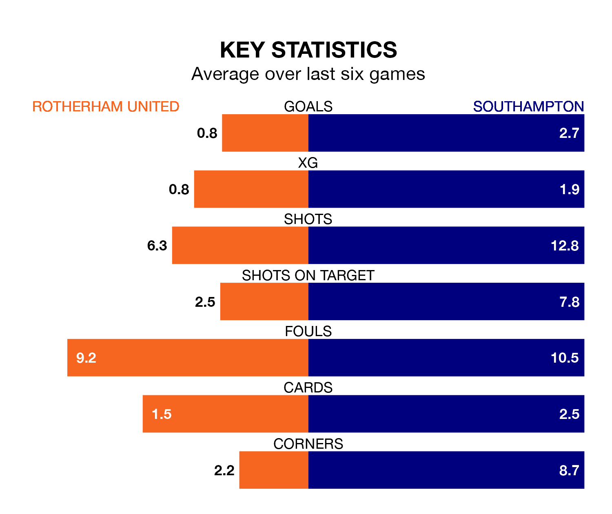

Mid-season relegation candidates Rotherham United face a challenge against high-flying Southampton at the AESSEAL New York Stadium on Saturday.
Rotherham United are rooted to the bottom of the EFL Championship table, and have picked up three wins and 10 draws in their 28 games to date.
The Saints, meanwhile, are third in the standings with 58 points, having won 17 and drawn seven, and are eight points behind table-toppers Leicester City.
With 53 goals in 28 games so far this season, Southampton are the league's second-highest scorers with 1.9 goals per game. And they are conceding fewer than average, letting in 32 goals at a rate of 1.1 per game.
Rotherham, meanwhile, are below average scorers, with 0.9 goals per game, compared to a league average of 1.4. They have conceded 1.9 goals per game.
United are in disappointing form in EFL Championship, with one win and three draws from their last six games.
With five wins and a draw over that period, the Saints' form is much better – they have taken 16 points from 18, compared to the Millers' six.
In Adam Armstrong, the visitors have one of the league's most on-form strikers so far this season. He has notched 14 goals in 28 appearances, to sit third in the scoring charts.
The home team's top scorers, with three goals each, are Hakeem Odofin and Jordan Hugill.
Rotherham's last match was on January 20, a 1-1 draw against Middlesbrough, with Cafú getting the goal for the Millers.
Southampton beat Swansea City 3-1 last time out, also on January 20, with Che Adams, Flynn Downes and William Smallbone on the scoresheet.
Updated: 08:51 (UTC), 25/01/24